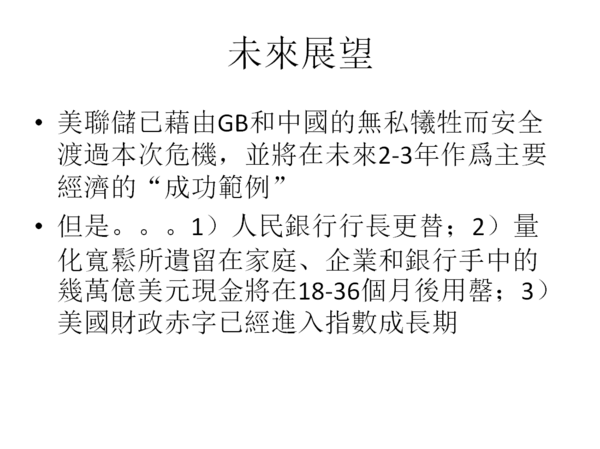
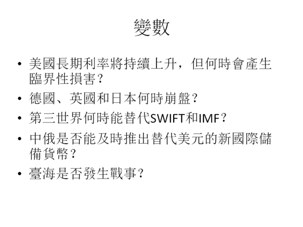

【金融】【戰略】國際金融未來趨勢
2023-09-17 08:25:00
原文网址：https://blog.udn.com/MengyuanWang/179876353


圖中1960年代後期的山峰，對應著越戰引發的赤字，連帶著導致1971年Nixon打破Bretton Woods體系，為美元強奪了國際儲備貨幣本位的地位（原本美元必須錨定於黃金，參見前文《美元的金融霸權（一）》）。其他工業國家，在美國官方“The dollar is our currency, but your problem“的無賴態度之下，只好跟著無限印鈔，為全球通脹醖釀了肥沃的土壤。
然而1970年上任的美聯儲主席Arthur Burns，爲了避免緊縮銀根會引發經濟衰退的政治責任，選擇和稀泥（亦即只升息到勉强能彌補通脹率的程度；當前的Powell也做了同樣的選擇），靜待外來的經貿環境變動代爲解決通脹。然而他運氣不好，撞上了能源危機，國内的强勢工會又很快將通脹固化並加强，價格和工資開始滾雪球式的指數上升，於是Burns黯然下臺，換上强硬的Volcker（期間有一位短命的Miller，但沒有留下值得討論的政績），後者隨即將真實利率（亦即利率超過通脹率的部分）調升到6%，故意製造了20世紀後半美國最嚴重的經濟衰退，並且在幕後默許支持產業外移新潮流以削弱工會勢力，於是成功打破滯漲的惡性循環，將通脹率壓囘4%左右。
1990年代，美國同時收割蘇聯和日本兩個巨人的尸體，經濟得以享受魚與熊掌兼得的狂歡，連通脹率都進一步壓縮到2%以下。進入21世紀之後，美國連續出兵阿富汗和伊拉克，財政赤字再度膨脹，但受益於中國勞工所提供的廉價工業品和幾任人民銀行行長的犧牲奉獻，反而經歷了20年的通縮”問題“，直到新冠和俄烏戰爭終於複製了50多年前越戰的經濟效應。

國際貨幣的主要用途，有貿易支付、大宗商品定價、和資產儲備三項；其中資產儲備所代表的”Exorbitant Privilege“（”離譜的特權“，1960年代法國財政部長Valéry Giscard dEstaing對美元的評論，參見《Wikipedia》；請注意，當時美元甚至還沒有擺脫對黃金的錨定）最大，大宗商品定價習慣最難改，只有貿易支付可以簡單獨力做出變革，例如過去兩年的俄國盧布。然而中國人民銀行即使在2017年美國公開挑起貿易戰之後，依然展現了無比的”戰略定力“，對上峰意圖陽奉陰違、敷衍了事。
正因爲儲備比率是國際貨幣地位的最重要指標，所以上圖值得詳細分析。首先，1971年打破Bretton Woods之後，黃金的儲備價值被美元完全替代，所以後者的占比不降反升，從75%上升到85%的歷史高點；這個主宰性的地位，一直持續到1980年Volcker所製造的衰退，然後歐洲國家和日本的中央銀行花了其後的十年想方設法將貨幣儲備多樣化，於是美元份額一路直瀉到46%的歷史低點。
1990年不但是美國收割地緣戰略對手的盛宴起點，也是美國完成全球獨霸、唯我獨尊的轉捩點，其後”盟友“的政治脊椎骨被逐一打斷，只有歐元的誕生在2002年之後分流了部分儲備貨幣份額。到2022年時歐元的20+%占比，和美元加起來，與1970年代美元的85%相比基本一致，反映了第三世界（尤其是中國）在金融和貨幣方面的無所作爲。

事實上，中國是500年來第一個完全依賴内部纍積而興起的主要經濟體，而美國這類殖民霸主不但依靠種族滅絕和對外搜刮崛起，幾百年近代歷史基本就是在不斷改進搜括的隱蔽性（美宣）和效率（美元），這種隱蔽而高效的搜刮就是當前“基於規則的全球秩序”的真諦。
只對投資報酬率做最大化，是資本主義的核心定義，也是自由市場不斷加劇貧富不均的基本原因，參見前文《社會主義國家應該如何管理資本》。

即使100%只看美式理論，也充滿著自相矛盾。例如在匯率問題上，出口競爭力對比指向人民幣的大幅升值；就在幾年前，美方宣傳口徑所口誅筆伐的，還是“中方操弄壓低匯率”。現在中美貿易逆差更大了，中國的產業升級也更進一步（參考汽車出口），爲什麽美方的理論要求卻忽然顛倒過來？差別就在於當時美國經歷通縮，而現在則擔心通脹。換句話説，人民銀行主管所遵循的指導原則，並不真是美式經濟理論，而是美國經濟利益；前者只是糊弄上峰的藉口。
”潮汐式收割“是”Exorbitant privilege“的重要手段之一，1997年亞洲貨幣危機是典型案例，參見前文《美元的金融霸权（二）》。請注意，因應1997年被收割的經驗，第三世界國家不得不在其後的20幾年來，將外匯儲備提高了一個數量級，反而助長了美聯儲（聯合附庸國家）的統治性優勢。這是因爲國際儲備貨幣的地位，其本質是一個”囚徒困境“，被害者只有在大國領導下團結起來、共同堅決反抗，才有脫困的可能。而這個”團結“的前提，立刻排除了自私短視國家（如印度）深度參與的可能。

當代美國統治階級又吃又要的貪婪和短視，是中國有内部金融蛀蟲多年扯後腿之後，仍然享有大好國際局面的原因。

這一輪被收割的韭菜，原本是美國最大假想敵的中國反而做出了大約一半的貢獻，真乃世界奇觀。

内心動機基本無法只憑觀察事實和邏輯推演來100%斷定，但在過去18個月要建立替代美元的新國際貨幣這件事上，中方兼有上峰的堅決意志支持、内參管道的正確分析和精準建議、以及主要夥伴俄國的徹底合作意願和高度專業能力，卻仍然一意走偏，選擇了讓印度和巴西兩個常年赤字國輕鬆攔截的道路，任何理性的分析者都必須認真考慮這是内賊以進為退、間接破壞的可能性。

所以下一個經濟危機，應該在2025年到2030年之間發生，而其焦點很可能是長期利率。

人民幣不適合全面替代美元（精確來説，不適合作爲金融性的國際儲備貨幣，但在支付和定價上可以盡力替代），原本是博客早年就多次解釋過的簡單事實，但内賊除了用金磚來敷衍阻撓之外，人民幣”國際化“也是常見的倒行逆施藉口，例如建立金融自貿區和開放美國投資銀行，都是以此做為矇騙上峰的説辭。

這些變數固然無法事先精確預測或掌控，它們對中方和全人類的影響好壞和大小卻取決於新任金融主管的能力和品德。而輿論雖然力量很小，但依舊是體制外知識份子做貢獻的唯一手段，所以我鼓勵大家努力傳播正確認知，或許能有一點糾偏的壓力。
【後註一，2023/09/16】在北市大給這場演講的問答階段，有聽衆推薦一篇論文（參見《TALENT VERSUS LUCK: THE ROLE OF RANDOMNESSIN SUCCESS AND FAILURE》），模擬人生成敗機制，發現成功三要素之中，除去明顯主導的資本/資源之外，運氣遠遠比能力（根據研究設計，是很廣義的能力，含人際關係/情商等等）重要得多。這不但符合我多年來的觀察（尤其在商場），也是社會主義國家必須强力扶貧並多方照顧弱勢群體的主因之一，特別在基礎教育和人才選拔上責無旁貸。
【後註二，2023/09/18】我剛注意到本月BHP和T-Mobile各自先後發行了數十億美元的新長期債券。照理說，10-年長期國債的利率已經從三年前的0.57%爬升到現在的4.30%（參見下圖），而基本所有大企業都在過去四年以近零利率拼命貸款，現金仍有大量剩餘，因此唯一在此環境下繼續大幅借貸的考慮，只能是預期長期利率還會爬升，並且在可見的未來不會回跌。BHP和T-Mobile的CFO顯然與我所見略同（雖然他們慢了幾拍），但總會有不少傻乎乎的企業高層看不清金融大局趨勢，幾年之後，他們就將是新一批的Silicon Valley Bank。

【後註三，2023/09/18】因爲美式MBA教育所帶來的商界文化腐朽，是消滅生產效率、推高貧富不均的重要推手，我在上周的訪談節目（參見《龍行天下》）中甚至開玩笑，說他們是現代社會的最大毀滅力量之一，甚至可怕過戰略核武。
於是有讀者和我分享了一篇論文（參見《Eclipse of rent-sharing: The effects of managers business education》），針對美國和丹麥商業主管接受MBA教育後的實際表現做了詳細統計分析，發現他們不但不增加產品銷量，連對利潤都沒有絲毫貢獻，唯一可以測量到的差異，在於他們大幅改變了薪資結構：削減底層而圖利高層。論文作者進一步確定，支付這些薪資的資金來自公司舊有的生意傳承，和他們的“管理”毫無關係。
總結來説，資本主義體制是圖利大資本的設計，而商學院教育在其中所扮演的角色，在於通過誘惑鼓勵經理階級參與分贓，來為掠奪勞工生產價值做普及和掩飾；這些MBA別説對國家社會，就是對公司和商場也是毫無正面價值的毒藥，有興趣深究的讀者可以參考聯想的案例。
【後註四，2023/09/19】上周我的演講、訪談和博文中毫無保留地批評了人民銀行的貨幣政策之後，難免出現洗地的聲浪，其内容當然是利用各種狡辯術。為了幫助非金融專業讀者精確理解我的論點，在此特別針對其中最高段的“語義歧義”伎倆（參見《常見的狡辯術》正文倒數第三段的討論）再做一次澄清：我不但熱烈支持，而且一再倡議人民幣積極取代美元的國際貿易支付和商品定價功能，事實上博客曾反復批評中國金融主管在這兩個任務上消極怠工，以致成果寥寥、乏善可陳。然而要用人民幣直接替代美元的金融儲備地位，不但是癡人説夢，而且有害無益；而金融官員卻熱衷以此作爲對國際金融巨鰐撤防的藉口，真正是無可辯解的引狼入室行爲，其用心之歹毒、危害之深遠，罄竹難書。
2 条留言
此外，正文中特別指明人民幣不適合直接當國際儲備貨幣的原因之一，就在於鼓勵發行國債、赤字消費，更別提以前已經有人拿翟的這個説法來問過了。最可惡的是，明明他説的，都是我反復駁斥過的錯誤論點，上周才强調是禍國殃民的歪論，你居然敢説“與您非常類似”；難道你以爲爲了情面我就會容許顛倒黑白、指鹿爲馬嗎？像你這種人不拉黑，還有什麽人值得拉黑？